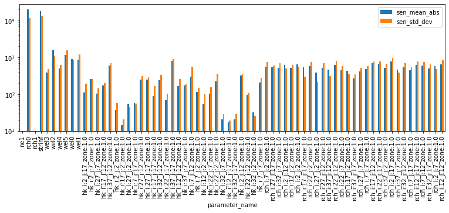
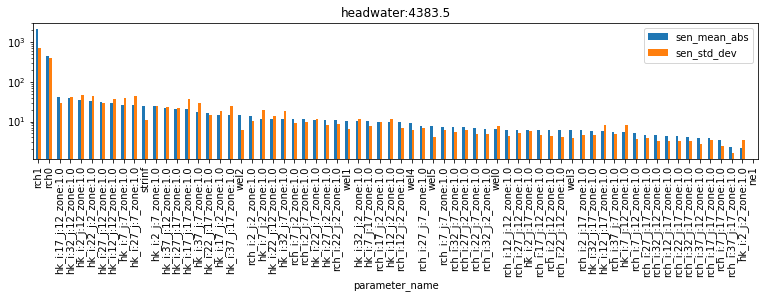
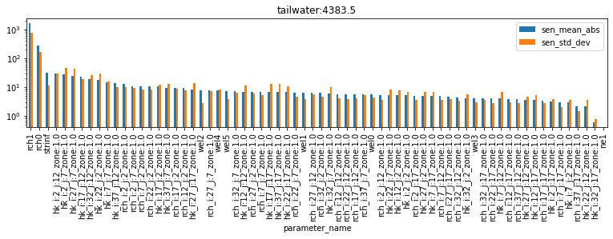
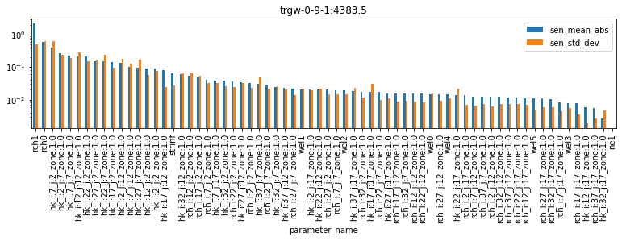
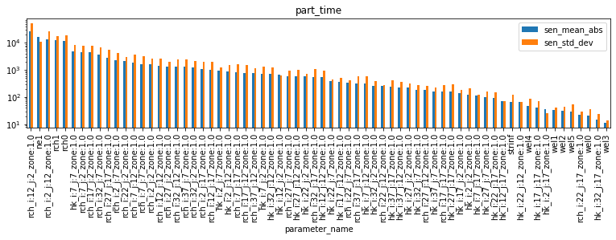

Global Sensitivity Analysis (GSA)¶
Sensitivity methods we've looked at so far only evaluate the "local" sensitivity at a single set of parameter values. For example, the Jacobian matrix represents perturbations to a single set of parameter values. This local view can be a problem in cases when our inverse problem is nonlinear (i.e. most cases), which means the parameter sensitivities can change depending on what the parameter value is.
What if we looked at more than one set of parameter values?¶
In contrast, Global Sensitivity Analyses are statistical approaches that characterize how model parameters affect model outputs over a wide range of acceptable parameter values. GSA aims for greater robustness and information provision than local sensitivity analysis based on partial derivatives of model outputs with respect to model parameters. Because local sensitivity analysis is limited to a single point in parameter space, the information it produces is frequently insufficient to support an understanding of the behaviour of nonlinear models whose outputs depend on complicated and parameter-value-dependent combinations of model parameters.
Some GSA methods provide general information about the variability of the sensitivities and have relatively low computational requirements, whereas others provide detailed information on nonlinear behavior and interactions between parameters at the expense of larger computational requirements. For a complete introduction to GSA theory and methods, see Saltelli et al (2004) and Saltelli et al (2008).
Saltelli et al (2004) provide an overview of the "settings" in which sensitivity analysis can be usefully employed. Of these, in an environmental modelling context the following are highlighted:
-
Identifying non-influential parameters (also known as "screening") is useful in the process of simplifying complex models (or parameterisation schemes). Non-influential parameters are those that do not influence the model output of interest (whether it be a forecast or the measurement objective function). These are parameters which can be fixed at any given value, without significantly influencing the output of interest. If necessary, they can be omitted from model design or parameter estimation, in an effort to reduce computational burden.
-
Identifying parameters, and the interactions between parameters, which are important for a forecast of interest. This is perhaps one of the most common uses of sensitivity analysis. Assuming that all uncertain parameters are susceptible to determination (at the same cost per parameter). A sensitivity analysis can aid in identifying the parameter that is most deserving of better experimental measurement in order to reduce the forecast uncertainty the most.
-
Mapping parameter-to-output response. Often decision-support modelling is interested in avoiding an undesired outcome for some forecast of interest. Sensitivity analysis can be employed to assess which parameters (or parameter combinations) are most responsible for producing output in the region of interest. In other words, which parameter (and parameter values) are most likely to result in a "bad thing" happening? This can become useful in a hypothesis-testing workflow.
GSA with PEST++¶
PEST++SEN currently supports two GSA methods. These are:
- the Method of Morris (Morris, 1991), with extensions proposed by Campolongo et al (2005), and
- the Method of Sobol (Sobol, 2001).
In this tutorial we'll focus on the Method of Morris because it is computationally more efficient. But this efficiency comes with a tradeoff: the Method of Morris only provides estimates of the mean and variance of the sensitivity distribution for each parameter. Because of the lack of complete description of the parameter nonlinearity and interactions between parameters, the Method of Morris can be used as a screening-level tool to identify the most important parameters for the observations tested. This screening can be followed by application of a more comprehensive tool, such as the Method of Sobol, which further characterizes the effects of parameter nonlinearity and inter-parameter interactions.
Method of Morris¶
As described in Saltelli et all (2004), the guiding philosophy of the Morris method is to determine which parameters may be considered to have effects which are (a) negligible, (b) linear and additive, or (c) non-linear or correlated with other parameters. The experimental plan proposed by Morris is composed of individually randomised 'one-at-a-time' experiments; the impact of changing one factor at a time is evaluated in turn. The Method of Morris is referred to as a “one-at-a-time” method because each parameter is perturbed sequentially to compute sensitivities - making it ideally suited for parallel computing.
Many parameters evaluated = lots of computer time. Luckily we can use PEST++SEN to run GSA in parallel.
The method samples the sensitivity of a given parameter at several locations over the range of reasonable parameter space (defined by the parameter bounds in the PEST Control file) and then provides two measures of parameter sensitivity: the mean (μ) and the standard deviation (σ) of the resulting sensitivity distribution. The mean, μ, captures the overall effect of a parameter on the model output of interest; the standard deviation, σ, measures a parameter’s sensitivity across the range of acceptable parameter values, this being an indicator of how nonlinear a given parameter is and (or) how the parameter interacts with other parameters. It is important to note that the Method of Morris cannot distinguish between parameter nonlinearity and parameter interactions because only the standard deviation of parameter sensitivity is available.
The Current Tutorial¶
In this notebook we will undertake GSA of the Freyberg model that employs pilot points as a parameterisation device. We will use the same model and PEST setup as in the "freyberg_1_local_sensitivity" tutorial notebook, and employ the Method of Morris.
Admin¶
First the usual admin of preparing folders and constructing the model and PEST datasets.
import sys
import os
import warnings
warnings.filterwarnings("ignore")
warnings.filterwarnings("ignore", category=DeprecationWarning)
import pandas as pd
import numpy as np
import matplotlib.pyplot as plt;
import shutil
sys.path.insert(0,os.path.join("..", "..", "dependencies"))
import pyemu
import flopy
assert "dependencies" in flopy.__file__
assert "dependencies" in pyemu.__file__
sys.path.insert(0,"..")
import herebedragons as hbd
plt.rcParams['font.size'] = 10
pyemu.plot_utils.font =10
# folder containing original model files
org_d = os.path.join('..', '..', 'models', 'monthly_model_files_1lyr_newstress')
# a dir to hold a copy of the org model files
working_dir = os.path.join('freyberg_mf6')
if os.path.exists(working_dir):
shutil.rmtree(working_dir)
shutil.copytree(org_d,working_dir)
# get executables
hbd.prep_bins(working_dir)
# get dependency folders
hbd.prep_deps(working_dir)
# run our convenience functions to prepare the PEST and model folder
hbd.prep_pest(working_dir)
# convenience function that builds a new control file with pilot point parameters for hk
hbd.add_ppoints(working_dir)
ins file for heads.csv prepared.
ins file for sfr.csv prepared.
noptmax:0, npar_adj:1, nnz_obs:24
written pest control file: freyberg_mf6\freyberg.pst
could not remove start_datetime
1 pars added from template file .\freyberg6.sfr_perioddata_1.txt.tpl
6 pars added from template file .\freyberg6.wel_stress_period_data_10.txt.tpl
0 pars added from template file .\freyberg6.wel_stress_period_data_11.txt.tpl
0 pars added from template file .\freyberg6.wel_stress_period_data_12.txt.tpl
0 pars added from template file .\freyberg6.wel_stress_period_data_2.txt.tpl
0 pars added from template file .\freyberg6.wel_stress_period_data_3.txt.tpl
0 pars added from template file .\freyberg6.wel_stress_period_data_4.txt.tpl
0 pars added from template file .\freyberg6.wel_stress_period_data_5.txt.tpl
0 pars added from template file .\freyberg6.wel_stress_period_data_6.txt.tpl
0 pars added from template file .\freyberg6.wel_stress_period_data_7.txt.tpl
0 pars added from template file .\freyberg6.wel_stress_period_data_8.txt.tpl
0 pars added from template file .\freyberg6.wel_stress_period_data_9.txt.tpl
starting interp point loop for 800 points
took 2.006187 seconds
1 pars dropped from template file freyberg_mf6\freyberg6.npf_k_layer1.txt.tpl
29 pars added from template file .\hkpp.dat.tpl
starting interp point loop for 800 points
took 2.01223 seconds
29 pars added from template file .\rchpp.dat.tpl
noptmax:0, npar_adj:65, nnz_obs:37
new control file: 'freyberg_pp.pst'
Load the pst control file¶
Let's double check what parameters we have in this version of the model using pyemu (you can just look in the PEST control file too.).
We have adjustable parameters that control SFR inflow rates, well pumping rates, hydraulic conductivity and recharge rates. Recall that by setting a parameter as "fixed" we are stating that we know it perfectly (should we though...?). Currently fixed parameters include porosity and future recharge.
For the sake of this tutorial, and as we did in the "local sensitivity" tutorial, let's set all the parameters free:
pst_name = "freyberg_pp.pst"
# load the pst
pst = pyemu.Pst(os.path.join(working_dir,pst_name))
#update parameter data
par = pst.parameter_data
#update parameter transform
par.loc[:, 'partrans'] = 'log'
noptmax:0, npar_adj:68, nnz_obs:37
Global Sensitivity¶
Unlike in the local sensitivity tutorial, we are no longer reliant on the existence of a Jacobian matrix.
However, to implement the Method of Morris we need to run the model a certain number of times for each adjustable parameter. By default (no extra settings), PEST++SEN will run the Method of Morris with 4 discretization points for each parameter, plus the 4 new starting points from the initial conditions (4 runs). Effectively this will take 4 times as much computational time as calculating a Jacobian matrix would.
Fortunately, we can run it in parallel.
As usual, make sure to specify the number of agents to use. This value must be assigned according to the capacity of youmachine:
pyemu.os_utils.start_workers(working_dir, # the folder which contains the "template" PEST dataset
'pestpp-sen', #the PEST software version we want to run
pst_name, # the control file to use with PEST
num_workers=num_workers, #how many agents to deploy
worker_root='.', #where to deploy the agent directories; relative to where python is running
master_dir=m_d, #the manager directory
)
GSA results¶
Let's look at a table and plot of the GSA results. In this case we are looking at the mean sensitivity, and the standard deviation of the sensitivity as we change the starting value in the parameter space.
If the mean sensitivity is high it shows that parameter has higher sensitivity across the parameter space.
If the standard deviation is low, then the linear assumptions of FOSM holds (that is, the sensitivity is the similar regardless of starting value).
Parameter Sensitivities¶
PES++SEN has written an output file with the extension *.msn. This file lists method of Morris outputs (μ, μ* and σ) for each adjustable parameter. The model-generated quantity for which these provide sensitivity measures is the objective function.
df = pd.read_csv(os.path.join(m_d,pst_name.replace(".pst",".msn")), index_col='parameter_name')
df.head()
| n_samples | sen_mean | sen_mean_abs | sen_std_dev | |
|---|---|---|---|---|
| parameter_name | ||||
| ne1 | 4 | 0.0000 | 0.000 | 0.000 |
| rch0 | 4 | 19922.5000 | 19922.500 | 11555.900 |
| rch1 | 4 | 0.0000 | 0.000 | 0.000 |
| strinf | 4 | -17888.8000 | 17888.800 | 13399.400 |
| wel3 | 4 | 63.5243 | 390.783 | 488.348 |

Where mean absolute sensitivity (\(μ*\)) - blue bars - is large, shows that the parameter is sensitive across parameter space. The parameters rch0 and strinf stand out. This is logical, as it is reasonable that they both have a significant control on the systems' water budget (reminder: these parameters are global recharge and stream inflow rates).
Other parameters which are notable are ne1 (porosity) and rch1 (recharge in the future). Sensitivities for these are non-existent. Is this reasonable? In this case - yes. Why? Because we have no observations in the calibration dataset that inform these parameters. We have no measurements in the future which might provide information on recharge (because it is the future..), and we have no measurements of transport or flow velocities which might inform porosity.
This means that, from a parameter estimation perspective, these two parameter groups are not important. If we are concerned with computational cost, we could potentially omit them from parameter estimation. However! These results tell us nothing about their importance from a forecast perspective. So we may still need to include them during uncertainty analysis.
The standard deviation (\(σ\)) - orange bars - is large everywhere. This is a sign that parameters are suffering from:
- non-linearity and/or
- correlation/interaction with other parameters
The Method of Morris cannot distinguish between the two! Recall from the local sensitivity tutorial that we saw many of these parameters were correlated - but not all!
So, if non-linearity is an issue - should we be using FOSM to undertake uncertainty analysis? Perhaps not, as it relies on the assumption of a linear relation between parameter and observation changes.
Forecast Sensitivities¶
Decision-support modelling always brings us back to our forecasts. As discussed above, identifying parameters, and the interactions between parameters, which are important for a forecast of interest can aid decision-support modelling design.
PES++SEN has written an output file with the extension *.mio. This file records μ, μ* and σ for all model outputs (i.e., observations) featured in the “observation data” section of the PEST control file.
We can load it and inspect sensitivities for our forecast observations. The cell below produces bar-plots displaying parameter μ* and σ for each forecast.
df_pred_sen = pd.read_csv(os.path.join(m_d,pst_name.replace(".pst",".mio")),skipinitialspace=True)
for forecast in pst.forecast_names:
tmp_df = df_pred_sen.loc[df_pred_sen.observation_name==forecast].sort_values(by='sen_mean_abs', ascending=False)
tmp_df.plot(x="parameter_name",y=["sen_mean_abs","sen_std_dev"],kind="bar", figsize=(13,2.5))
plt.title(forecast)
plt.yscale('log');




As you can see, different forecasts are sensitive to different parameters. Note, for example, that the part_time (particle travel time) forecast is sensitive to ne1 (porosity) parameters, however none of the other forecasts are. Almost all forecasts are sensitive to recharge (rch0 and rch1), and so on. By ranking sensitivities in this fashion, we can identify which parameters to focus on to reduce forecast uncertainty. We can also identify parameters which can be omitted (or "simplified"), if they have little or no effect on the forecast of interest (e.g. porosity on the headwater forecast).
As we saw above for parameters, once again σ is very high (for almost all parameters...). This suggests either non-linearity and/or parameter interactions. Relying on linear methods for uncertainty analysis is therefore compromised. Ideally we should employ non-linear methods, as will be discussed in the subsequent tutorial.